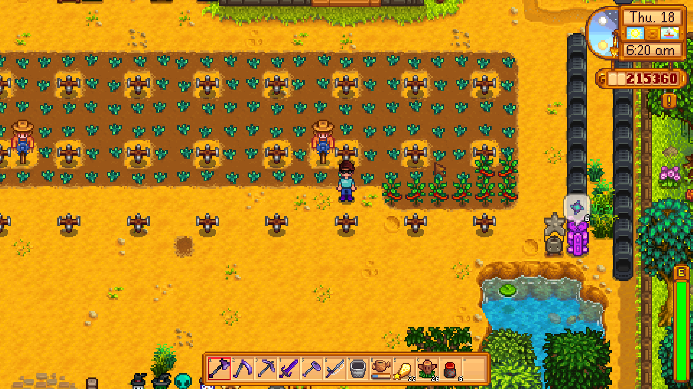
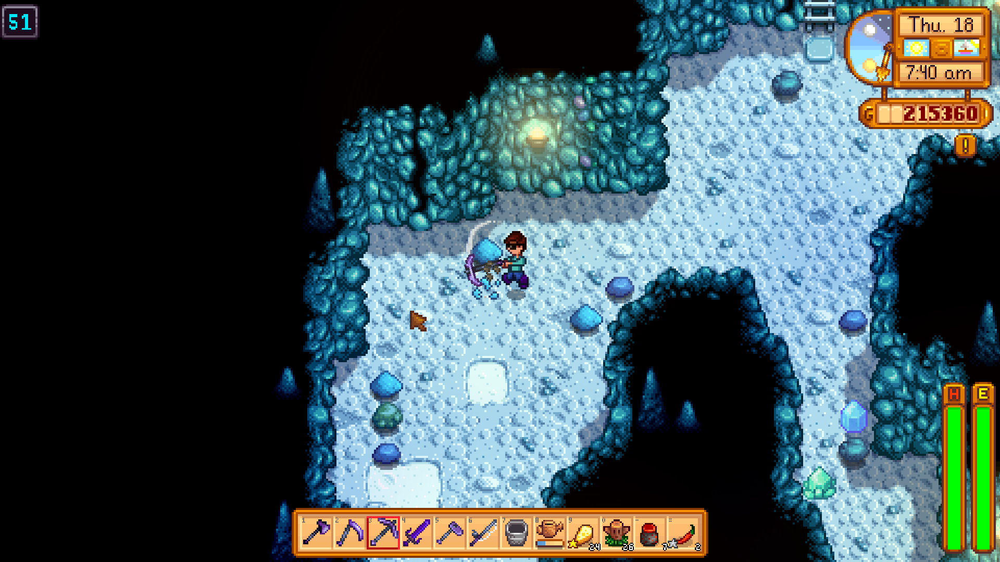
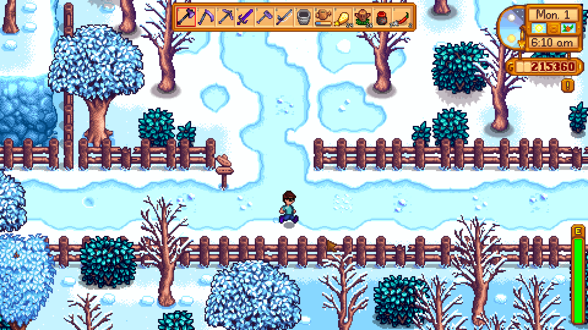

stardewvalley.exe
Stardew Valley
Timing Music to Energize the Grind

The farming sim Stardew Valley is the perfect example of a cozy game. The player is tasked with restoring a run-down farm while building a relationship with the nearby town’s friendly villagers. No intense mechanical skill or intelligence is required, only some spare time. Despite all this, and no matter how entertaining the core gameplay may be, there will eventually reach a point where the gameplay loop becomes repetitive.
A typical day in the mid-to-late game of Stardew Valley usually involves waking up, checking on crops and animals, going into town to run a few errands, and then going to bed. This would become boring very quickly if not for the game’s excellent soundtrack and the times when it plays. Every morning when the player wakes up and steps outside their house, a track will immediately start playing with the intent to make the tasks they have to accomplish slightly easier. Most of these tracks will start by establishing a beat, and then layering a simple melody and a few accompanying tracks on top. An excellent example of this technique can be found in one track that plays during the summer.

Early measures in the song.
Even during the winter of the game, where there are significantly less tasks for the player to accomplish, the game still plays morning tracks that serve to encourage the player to use the day to get tasks done that they may not have had time for in the other seasons, even if they do so a little more slowly. The winter tracks typically trade faster and more energetic musical ideas for more composed and developed ones, focusing on intensifying the mood of the season.

Early measures in the song.

Outside of the morning songs that play, songs also play for various other purposes throughout the game. Activities such as mining, visiting unique locations, and socializing all have unique music tracks that play in the background, serving to make each of these tasks more enjoyable. One notable track plays while the player is in an ice-themed section of the mines, and establishes a consistent pulse that aligns well with the speed of the player’s pickaxe, and a simple melody that improves the theming of the area. Especially in areas like the mines, these tracks may not play as soon as the player enters those areas, and there may be dead space in between the different tracks to let the ambience in the background show through, giving a more realistic sound as opposed to immediately looping the song or starting the next track once the previous one ends.
Early measures in the song.
Even though having engaging and good-sounding music is essential to creating a positive player experience, timing that music well and giving space for other sounds to show through is also very important. In the case of Stardew Valley, this timing helps to turn otherwise slow and boring tasks into something that the player looks forward to doing.
Stardew Valley ©2016 ConcernedApe